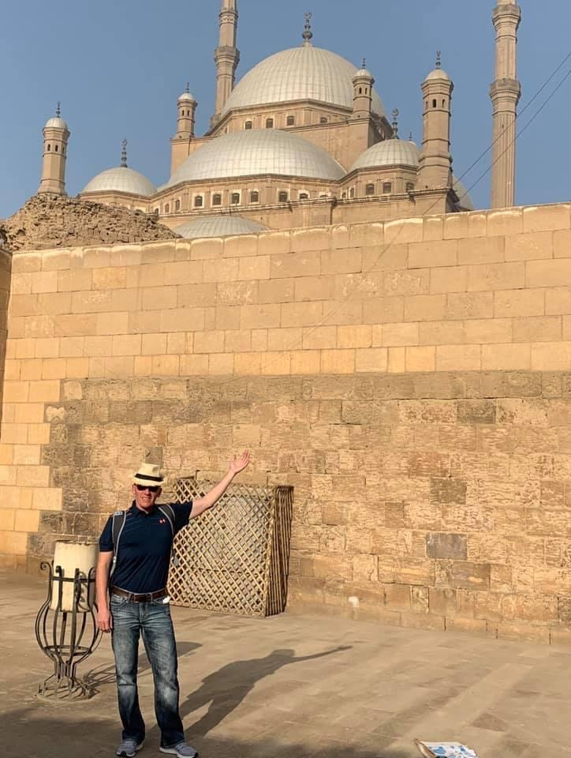

A few years ago, tragedy struck when Marks partner of 12 years committed suicide. After 20
years in corporate America, Mark began considering a career in real estate and became
licensed, although the motivation to apply himself just wasn't there yet. "I was more interested in
traveling,”Mark said. “Mypastor thought it would be healing and therapeutic for me to travel.
” so, for two years, Mark did just that, visiting places like Egypt, India, Italy, Thailand, Jordan, and
Israel.

Mark Faatz - Nebraska Realty
Tips to travel to Israel.
So of course, I need to make a mention of safety as there are often alerts or State Department
warnings to avoid certain places in Israel. While the Gaza Strip and West Bank are listed as not
to be visited in any circumstances as a tourist, it can also be noted that Golan Heights are not
recommended and even Jerusalem when it is at times of tension.
We did visit Golan Heights, which borders Syria and I will share more about that in another post.
They told us of missiles you can watch falling over Syria from the place we were standing, and
you could see black burn marks on the ground from mortar shells which landed on the Israel
side accidentally.
We couldnt walk around openly here as everywhere was covered in signs for mines which were
buried here by Israelis in order to keep the land. There were anti-tank trenches, tanks stationed
and abandoned, and other signs of conflict. Our driver actually pointed out a house on the
Syrian side and claimed it is currently occupied by Al-Qaeda while the other houses were full of
rebels in hiding, which “Assad is bombing every other day for the last 5.5 years”.
The border is now closed there, but the UN is still stationed, as we saw when we drove past. We
werent there to see war of course, it was to go to a winery. Yes, a winery. Because Israel is still
a country no matter what is happening with their neighbors and on their borders. People have
kids, go to school, get married, have parties, and live their lives to the fullest. I however didnt
grow up in Israel and dont know this conflict well, so it was definitely a moment of eyes wide
open, taking in everything, and a lot of “wow” thoughts.
While we saw it in the papers, it wasnt something you can “feel” in the air. I think that people in
Israel live in a state of conflict their whole lives, with 18 year olds both male and female being
made to serve in the military (unless married, Orthodox, Muslim, or a few other reasons), and
having to go into a bomb shelter being nothing shocking to them (although saddening). Because
of that, this is why I think the city still feels safe and life goes on like normal when attacks do
happen.
Mark Faatz - Nebraska Realty
Obviously, it affects their lives long-term as they are constantly living in a state of conflict with
their neighbors and short-term if someone they know is injured or killed. I think people picture
those in Israel always on edge, always worried, but my point is to share that you dont feel the
tension even if its there behind the scenes.
Its up to you to make decisions on where you should travel. There are times when Jerusalem is
considered risky and you should in this case trust the judgment of the State Department or
travel advisories of your country.
Im not going to go into who is right and wrong in terms of the conflict between Israel and
Palestine, any of their other enemies, or who should have territory. Its too complex and being
there a week doesnt give me the insight I would need to fully understand the issues involved.
There are SO many different moving parts and so much history involved. The reason Vibe Israel
doesnt talk politics is because they want to show that Israel is more than that, and they believe
that it is difficult to explain a situation without having at least a little bias from either side.